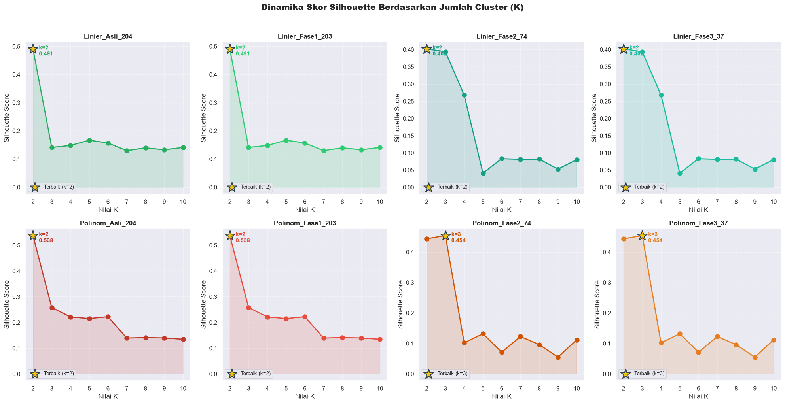
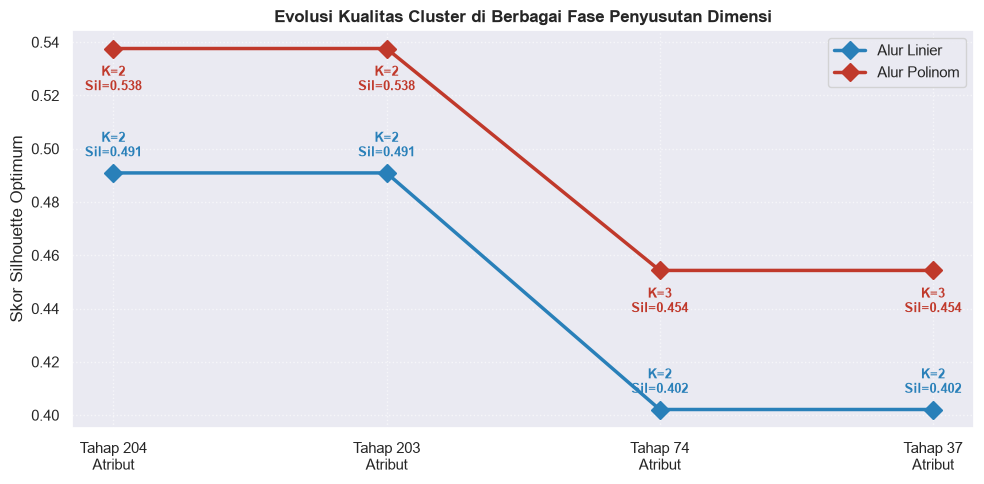
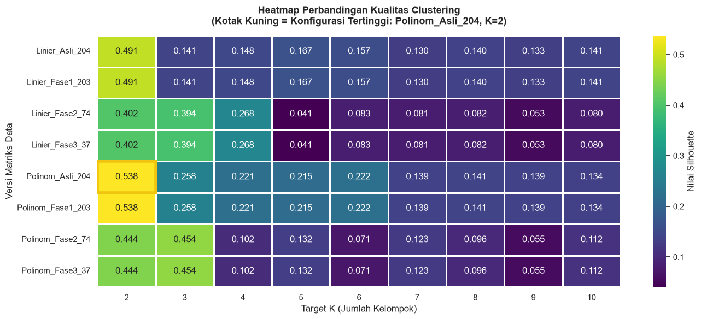
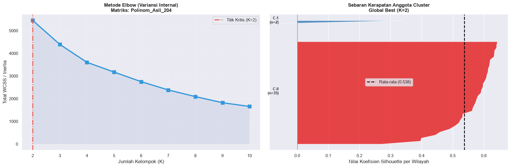
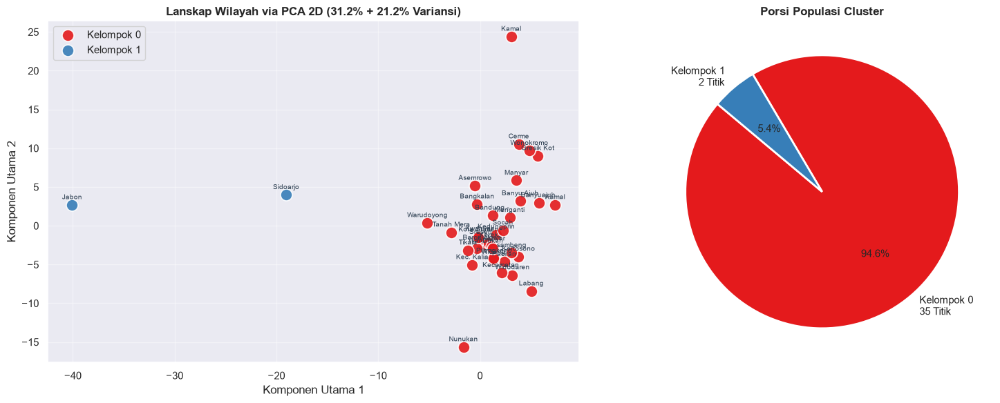
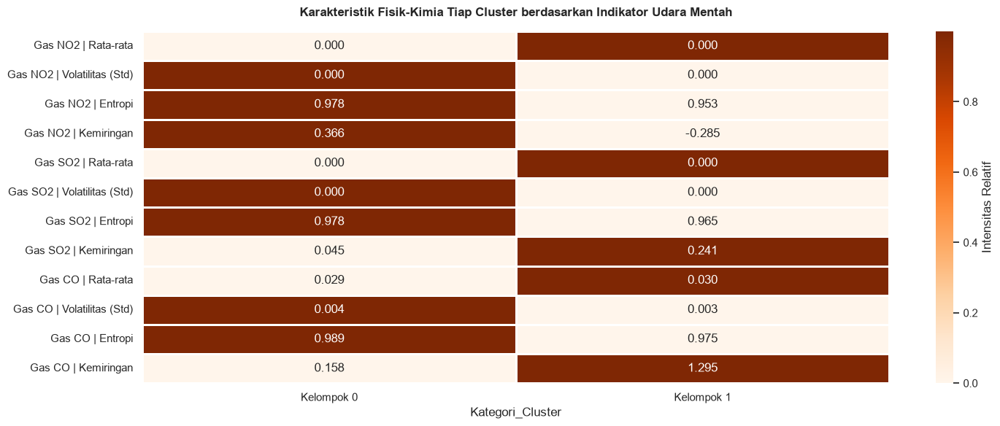

Fase 3: Uji Coba K-Means & Evaluasi Metrik Silhouette#
Tahapan ini merupakan proses inti dari machine learning yang kita bangun. Kita akan menerapkan algoritma K-Means Clustering ke seluruh representasi data yang dihasilkan pada Tahap 2 (total 8 matriks dari alur 204 → 203 → 74 → 37). Penentuan model terbaik akan didasarkan pada skor Silhouette Coefficient.
Landasan Teori#
1. K-Means Clustering#
Algoritma ini bertugas mempartisi sekumpulan sampel data ke dalam \(k\) kelompok (cluster). Tujuan utamanya adalah meminimalkan jarak kuadrat antara titik data dengan titik pusat (centroid) dari masing-masing cluster.
Langkah kerja K-Means:
Menentukan \(k\) titik awal secara strategis (menggunakan metode
k-means++).Menghubungkan setiap sampel data ke centroid terdekat.
Menghitung ulang posisi centroid berdasarkan rata-rata sampel di dalam kelompok tersebut.
Melakukan iterasi langkah 2 dan 3 hingga posisi centroid stabil (konvergen).
2. Silhouette Coefficient#
Metrik ini digunakan untuk mengukur seberapa solid sebuah cluster. Formulanya membandingkan kedekatan antar-sampel dalam satu cluster yang sama (\(a\)) dengan jarak ke cluster tetangga terdekat (\(b\)).
Rentang nilai Silhouette berkisar antara -1 hingga +1:
Mendekati +1: Sampel berada di kelompok yang sangat tepat dan jauh dari kelompok lain.
Mendekati 0: Sampel berada tepat di perbatasan dua kelompok.
Mendekati -1: Sampel kemungkinan besar salah klasifikasi (berada di cluster yang salah).
3. Metode Siku (Elbow)#
Pendekatan visual untuk melihat penurunan nilai Inertia (jarak kuadrat ke pusat cluster). Titik di mana kurva mulai melandai tajam (membentuk siku) seringkali merupakan indikasi jumlah cluster yang optimal. Kita akan mengkombinasikan metode ini dengan skor Silhouette untuk validasi silang.
Skenario Uji Coba#
Sumber Data: 8 format matriks (Linier & Polinomial pada dimensi 204, 203, 74, dan 37)
Rentang Cluster (\(k\)): 2 hingga 10
Total Uji Coba: 72 eksekusi K-Means independen
Parameter Model:
n_init=20(20 kali inisialisasi centroid),random_state=42
import warnings
warnings.filterwarnings('ignore')
import os
import pickle
import numpy as np
import pandas as pd
import matplotlib.pyplot as plt
import seaborn as sns
from sklearn.cluster import KMeans
from sklearn.metrics import silhouette_score, silhouette_samples, adjusted_rand_score
from sklearn.decomposition import PCA
# Pengaturan visual
plt.rcParams['figure.figsize'] = (14, 6)
sns.set_theme(style='darkgrid', font_scale=1.0)
DIR_INPUT = '../data/hasil_tahap2'
DIR_OUTPUT = '../data/hasil_tahap3'
os.makedirs(DIR_OUTPUT, exist_ok=True)
# ── 3.1 Memuat Data Tahap 2 ───────────────────────────────────
jalur_data = os.path.join(DIR_INPUT, 'koleksi_data_tahap2.pkl')
with open(jalur_data, 'rb') as arsip:
paket_data = pickle.load(arsip)
kumpulan_matriks = paket_data['koleksi_matriks']
meta_lin = paket_data['metadata_lin']
meta_pol = paket_data['metadata_pol']
df_asli_lin = paket_data['dataframe_asli_lin']
df_asli_pol = paket_data['dataframe_asli_pol']
print("✓ Paket data Tahap 2 berhasil dimuat.")
print(f"✓ Jumlah matriks representasi: {len(kumpulan_matriks)}")
print("\nDaftar Struktur Matriks:")
for nama_kunci, matriks in kumpulan_matriks.items():
print(f" ⏵ {nama_kunci:<20} | Dimensi: {matriks.shape}")
✓ Paket data Tahap 2 berhasil dimuat.
✓ Jumlah matriks representasi: 8
Daftar Struktur Matriks:
⏵ Linier_Asli_204 | Dimensi: (37, 204)
⏵ Linier_Fase1_203 | Dimensi: (37, 203)
⏵ Linier_Fase2_74 | Dimensi: (37, 74)
⏵ Linier_Fase3_37 | Dimensi: (37, 37)
⏵ Polinom_Asli_204 | Dimensi: (37, 204)
⏵ Polinom_Fase1_203 | Dimensi: (37, 203)
⏵ Polinom_Fase2_74 | Dimensi: (37, 74)
⏵ Polinom_Fase3_37 | Dimensi: (37, 37)
3.2 Eksekusi 72 Skenario K-Means#
Kita akan melakukan looping untuk menguji \(k=2\) hingga \(k=10\) pada 8 dataset yang ada.
RENTANG_K = range(2, 11)
INISIALISASI = 20
SEED_ACAK = 42
rekam_jejak = []
peta_label = {}
total_skenario = len(kumpulan_matriks) * len(RENTANG_K)
hitungan_run = 0
print(f"Memulai iterasi untuk {total_skenario} skenario K-Means...")
print("-" * 60)
for nama_dataset, matriks_X in kumpulan_matriks.items():
skor_sil_tertinggi = -1
k_andalan = 2
for k_uji in RENTANG_K:
hitungan_run += 1
model_km = KMeans(n_clusters=k_uji, n_init=INISIALISASI, random_state=SEED_ACAK, init='k-means++')
prediksi_label = model_km.fit_predict(matriks_X)
# Standarisasi Penamaan Cluster:
# Cluster 0 akan selalu merujuk pada cluster dengan anggota terbanyak.
distribusi_anggota = np.bincount(prediksi_label, minlength=k_uji)
urutan_besar_ke_kecil = np.argsort(-distribusi_anggota, kind='stable')
kamus_mapping = np.empty(k_uji, dtype=int)
kamus_mapping[urutan_besar_ke_kecil] = np.arange(k_uji)
prediksi_label_terurut = kamus_mapping[prediksi_label]
# Kalkulasi Metrik
nilai_silhouette = silhouette_score(matriks_X, prediksi_label_terurut)
nilai_inertia = model_km.inertia_
peta_label[(nama_dataset, k_uji)] = prediksi_label_terurut
rekam_jejak.append({
'Entitas_Data': nama_dataset,
'Nilai_K': k_uji,
'Skor_Silhouette': round(nilai_silhouette, 5),
'Skor_Inertia': round(nilai_inertia, 3)
})
if nilai_silhouette > skor_sil_tertinggi:
skor_sil_tertinggi = nilai_silhouette
k_andalan = k_uji
print(f" ➤ {nama_dataset:<20} | K-Optimal: {k_andalan} | Silhouette: {skor_sil_tertinggi:.4f}")
df_evaluasi = pd.DataFrame(rekam_jejak)
print(f"\nProses Selesai. Seluruh {hitungan_run} model telah dibangun dan dievaluasi.")
Memulai iterasi untuk 72 skenario K-Means...
------------------------------------------------------------
➤ Linier_Asli_204 | K-Optimal: 2 | Silhouette: 0.4909
➤ Linier_Fase1_203 | K-Optimal: 2 | Silhouette: 0.4909
➤ Linier_Fase2_74 | K-Optimal: 2 | Silhouette: 0.4021
➤ Linier_Fase3_37 | K-Optimal: 2 | Silhouette: 0.4021
➤ Polinom_Asli_204 | K-Optimal: 2 | Silhouette: 0.5375
➤ Polinom_Fase1_203 | K-Optimal: 2 | Silhouette: 0.5375
➤ Polinom_Fase2_74 | K-Optimal: 3 | Silhouette: 0.4543
➤ Polinom_Fase3_37 | K-Optimal: 3 | Silhouette: 0.4543
Proses Selesai. Seluruh 72 model telah dibangun dan dievaluasi.
3.3 Visualisasi Kurva Silhouette (Evaluasi Tiap Dataset)#
Mari kita lihat bagaimana pergerakan skor Silhouette seiring dengan bertambahnya nilai \(k\). Titik bintang merepresentasikan konfigurasi terbaik untuk masing-masing matriks.
# Mapping warna untuk setiap versi data
WARNA_TEMA = {
'Linier_Asli_204': '#27ae60', 'Linier_Fase1_203': '#2ecc71',
'Linier_Fase2_74': '#16a085', 'Linier_Fase3_37': '#1abc9c',
'Polinom_Asli_204': '#c0392b', 'Polinom_Fase1_203': '#e74c3c',
'Polinom_Fase2_74': '#d35400', 'Polinom_Fase3_37': '#e67e22'
}
fig, kanvas = plt.subplots(2, 4, figsize=(20, 10))
kanvas = kanvas.flatten()
for indeks, (kunci_data, _) in enumerate(kumpulan_matriks.items()):
ax = kanvas[indeks]
potongan_df = df_evaluasi[df_evaluasi['Entitas_Data'] == kunci_data]
kode_warna = WARNA_TEMA.get(kunci_data, '#34495e')
ax.plot(potongan_df['Nilai_K'], potongan_df['Skor_Silhouette'], marker='o',
color=kode_warna, linewidth=2, markersize=8, zorder=3)
ax.fill_between(potongan_df['Nilai_K'], potongan_df['Skor_Silhouette'],
alpha=0.15, color=kode_warna)
# Deteksi dan tandai titik optimum
baris_terbaik = potongan_df.loc[potongan_df['Skor_Silhouette'].idxmax()]
k_opt = int(baris_terbaik['Nilai_K'])
sil_opt = baris_terbaik['Skor_Silhouette']
ax.scatter(k_opt, sil_opt, s=350, color='#f1c40f', edgecolor='#2c3e50',
linewidth=1.5, marker='*', zorder=5, label=f'Terbaik (k={k_opt})')
anotasi_teks = f" k={k_opt}\n {sil_opt:.3f}"
ax.annotate(anotasi_teks, xy=(k_opt, sil_opt), xytext=(8, -12),
textcoords='offset points', fontsize=10, fontweight='bold', color=kode_warna)
ax.set_title(kunci_data, fontweight='bold', fontsize=12)
ax.set_xticks(list(RENTANG_K))
ax.set_ylabel('Silhouette Score')
ax.set_xlabel('Nilai K')
ax.legend(loc='lower left', fontsize=9)
ax.grid(True, linestyle='--', alpha=0.5)
plt.suptitle('Dinamika Skor Silhouette Berdasarkan Jumlah Cluster (K)', fontsize=15, fontweight='black', y=1.02)
plt.tight_layout()
plt.savefig(os.path.join(DIR_OUTPUT, '01_kurva_silhouette_kolektif.png'), dpi=120)
plt.show()

3.4 Klasemen dan Penentuan Konfigurasi Global Terbaik#
Menyaring 1 kombinasi terbaik dari masing-masing dataset, kemudian memilih satu pemenang mutlak (Global Best) untuk dianalisis lebih dalam.
tabel_juara_tiap_data = (
df_evaluasi.loc[df_evaluasi.groupby('Entitas_Data', sort=False)['Skor_Silhouette'].idxmax()]
.sort_values('Skor_Silhouette', ascending=False)
.reset_index(drop=True)
)
tabel_juara_tiap_data.index += 1
print("--- RINGKASAN KONFIGURASI TERBAIK PER DATASET ---")
print(tabel_juara_tiap_data.to_string())
tabel_juara_tiap_data.to_csv(os.path.join(DIR_OUTPUT, 'klasemen_cluster.csv'))
# Ekstraksi Pemenang Global
baris_jawara_dunia = df_evaluasi.loc[df_evaluasi['Skor_Silhouette'].idxmax()]
DATASET_JUARA = baris_jawara_dunia['Entitas_Data']
K_JUARA = int(baris_jawara_dunia['Nilai_K'])
SILHOUETTE_JUARA = baris_jawara_dunia['Skor_Silhouette']
LABEL_JUARA = peta_label[(DATASET_JUARA, K_JUARA)]
print("\n🏆 🏆 KONFIGURASI GLOBAL TERBAIK 🏆 🏆")
print(f" ~ Representasi : {DATASET_JUARA}")
print(f" ~ Jumlah Cluster : {K_JUARA}")
print(f" ~ Skor Silhouette: {SILHOUETTE_JUARA:.4f}")
--- RINGKASAN KONFIGURASI TERBAIK PER DATASET ---
Entitas_Data Nilai_K Skor_Silhouette Skor_Inertia
1 Polinom_Fase1_203 2 0.53755 5450.817
2 Polinom_Asli_204 2 0.53755 5450.817
3 Linier_Asli_204 2 0.49086 5442.270
4 Linier_Fase1_203 2 0.49086 5442.270
5 Polinom_Fase2_74 3 0.45432 1968.616
6 Polinom_Fase3_37 3 0.45432 1968.616
7 Linier_Fase3_37 2 0.40214 2226.972
8 Linier_Fase2_74 2 0.40214 2226.972
🏆 🏆 KONFIGURASI GLOBAL TERBAIK 🏆 🏆
~ Representasi : Polinom_Asli_204
~ Jumlah Cluster : 2
~ Skor Silhouette: 0.5375
3.5 Pemantauan Kestabilan Partisi di Tiap Fase Reduksi (204 → 203 → 74 → 37)#
Apakah reduksi atribut mengubah struktur kelompok wilayah? Kita bisa mengeceknya menggunakan Adjusted Rand Index. Jika nilainya mendekati 1.0, berarti komposisi wilayah di dalam cluster tidak berubah meskipun jumlah fiturnya menyusut drastis.
DIMENSI_ALUR = [204, 203, 74, 37]
METODE_INTERPOLASI = ['Linier', 'Polinom']
rekap_jejak_dimensi = []
for met in METODE_INTERPOLASI:
info_sebelumnya = None
for dim in DIMENSI_ALUR:
# Rekonstruksi nama kunci (contoh: Polinom_Fase2_74)
if dim == 204: nama_kunci = f"{met}_Asli_204"
elif dim == 203: nama_kunci = f"{met}_Fase1_203"
elif dim == 74: nama_kunci = f"{met}_Fase2_74"
else: nama_kunci = f"{met}_Fase3_37"
if nama_kunci not in kumpulan_matriks: continue
# Ambil konfigurasi terbaik untuk nama_kunci ini
potongan = df_evaluasi[df_evaluasi['Entitas_Data'] == nama_kunci]
juara_lokal = potongan.loc[potongan['Skor_Silhouette'].idxmax()]
k_lok = int(juara_lokal['Nilai_K'])
lbl_lok = peta_label[(nama_kunci, k_lok)]
sil_lok = juara_lokal['Skor_Silhouette']
status_partisi = ""
if info_sebelumnya is not None and info_sebelumnya['k'] == k_lok:
skor_ari = adjusted_rand_score(info_sebelumnya['lbl'], lbl_lok)
if skor_ari > 0.99:
status_partisi = f"Identik dengan formasi {info_sebelumnya['dim']} atribut"
rekap_jejak_dimensi.append({
'Garis Keturunan': met,
'Sisa Atribut': dim,
'K Ideal': k_lok,
'Silhouette': round(sil_lok, 4),
'Distribusi Wilayah': " | ".join(map(str, np.bincount(lbl_lok, minlength=k_lok))),
'Stabilitas': status_partisi
})
info_sebelumnya = {'dim': dim, 'k': k_lok, 'lbl': lbl_lok}
df_stabilitas = pd.DataFrame(rekap_jejak_dimensi)
print("--- JEJAK STABILITAS KELOMPOK SELAMA REDUKSI DIMENSI ---")
print(df_stabilitas.to_string(index=False))
# Plot evolusi nilai silhouette
fig, ax = plt.subplots(figsize=(10, 5))
sumbu_x = np.arange(len(DIMENSI_ALUR))
for met, warna in zip(['Linier', 'Polinom'], ['#2980b9', '#c0392b']):
subset = df_stabilitas[df_stabilitas['Garis Keturunan'] == met]
ax.plot(sumbu_x, subset['Silhouette'], marker='D', markersize=9,
linewidth=2.5, color=warna, label=f'Alur {met}')
for i, (_, baris) in enumerate(subset.iterrows()):
teks_ano = f"K={baris['K Ideal']}\nSil={baris['Silhouette']:.3f}"
offset_y = 12 if met == 'Linier' else -30
ax.annotate(teks_ano, xy=(i, baris['Silhouette']), xytext=(0, offset_y),
textcoords='offset points', ha='center', fontweight='bold', color=warna, fontsize=9)
ax.set_xticks(sumbu_x)
ax.set_xticklabels([f"Tahap {d}\nAtribut" for d in DIMENSI_ALUR])
ax.set_title('Evolusi Kualitas Cluster di Berbagai Fase Penyusutan Dimensi', fontweight='bold')
ax.set_ylabel('Skor Silhouette Optimum')
ax.grid(True, linestyle=':', alpha=0.6)
ax.legend()
plt.tight_layout()
plt.savefig(os.path.join(DIR_OUTPUT, '02_evolusi_dimensi.png'), dpi=120)
plt.show()
--- JEJAK STABILITAS KELOMPOK SELAMA REDUKSI DIMENSI ---
Garis Keturunan Sisa Atribut K Ideal Silhouette Distribusi Wilayah Stabilitas
Linier 204 2 0.4909 34 | 3
Linier 203 2 0.4909 34 | 3 Identik dengan formasi 204 atribut
Linier 74 2 0.4021 33 | 4
Linier 37 2 0.4021 33 | 4 Identik dengan formasi 74 atribut
Polinom 204 2 0.5376 35 | 2
Polinom 203 2 0.5376 35 | 2 Identik dengan formasi 204 atribut
Polinom 74 3 0.4543 35 | 1 | 1
Polinom 37 3 0.4543 35 | 1 | 1 Identik dengan formasi 74 atribut

3.6 Peta Suhu (Heatmap) Komprehensif#
Menampilkan keseluruhan matriks hasil eksperimen. Area yang menyala lebih terang menunjukkan konfigurasi clustering yang sangat terpisah (kualitas tinggi).
tabel_pivot = df_evaluasi.pivot(index='Entitas_Data', columns='Nilai_K', values='Skor_Silhouette')
urutan_baris = ['Linier_Asli_204', 'Linier_Fase1_203', 'Linier_Fase2_74', 'Linier_Fase3_37',
'Polinom_Asli_204', 'Polinom_Fase1_203', 'Polinom_Fase2_74', 'Polinom_Fase3_37']
tabel_pivot = tabel_pivot.reindex(urutan_baris)
fig, ax = plt.subplots(figsize=(14, 6))
sns.heatmap(tabel_pivot, annot=True, fmt='.3f', cmap='viridis',
linewidths=1, ax=ax, cbar_kws={'label': 'Nilai Silhouette'})
idx_dataset_juara = urutan_baris.index(DATASET_JUARA)
idx_k_juara = list(tabel_pivot.columns).index(K_JUARA)
# Menambahkan kotak emas untuk penanda jawara
import matplotlib.patches as patches
ax.add_patch(patches.Rectangle((idx_k_juara, idx_dataset_juara), 1, 1,
fill=False, edgecolor='#f1c40f', lw=4, zorder=5))
judul_peta = f"Heatmap Perbandingan Kualitas Clustering\n(Kotak Kuning = Konfigurasi Tertinggi: {DATASET_JUARA}, K={K_JUARA})"
ax.set_title(judul_peta, fontweight='bold', fontsize=13, pad=15)
ax.set_ylabel('Versi Matriks Data')
ax.set_xlabel('Target K (Jumlah Kelompok)')
plt.tight_layout()
plt.savefig(os.path.join(DIR_OUTPUT, '03_heatmap_silhouette.png'), dpi=120)
plt.show()

3.7 Evaluasi Keselarasan (Silhouette Plot) & Validasi Elbow#
Untuk konfigurasi terbaik global, kita akan membongkar distribusinya secara mikroskopis (per sampel wilayah) menggunakan grafik pisau Silhouette dan memastikan bahwa K yang terpilih juga didukung oleh kaidah metode siku (Elbow).
# Ekstrak data milik sang Juara
matriks_juara = kumpulan_matriks[DATASET_JUARA]
nilai_sil_individu = silhouette_samples(matriks_juara, LABEL_JUARA)
fig, (ax_elbow, ax_sil) = plt.subplots(1, 2, figsize=(18, 6))
# --- PLOT 1: ELBOW METHOD ---
potongan_juara = df_evaluasi[df_evaluasi['Entitas_Data'] == DATASET_JUARA]
ax_elbow.plot(potongan_juara['Nilai_K'], potongan_juara['Skor_Inertia'],
marker='s', color='#3498db', linewidth=3, markersize=8)
ax_elbow.fill_between(potongan_juara['Nilai_K'], potongan_juara['Skor_Inertia'], alpha=0.1)
ax_elbow.axvline(K_JUARA, color='#e74c3c', linestyle='-.', lw=2, label=f'Titik Kritis (K={K_JUARA})')
ax_elbow.set_title(f'Metode Elbow (Variansi Internal)\nMatriks: {DATASET_JUARA}', fontweight='bold')
ax_elbow.set_xlabel('Jumlah Kelompok (K)')
ax_elbow.set_ylabel('Total WCSS / Inertia')
ax_elbow.set_xticks(list(RENTANG_K))
ax_elbow.legend()
ax_elbow.grid(True, ls=':', alpha=0.6)
# --- PLOT 2: SILHOUETTE PLOT ---
batas_bawah = 10
palet_warna_cluster = sns.color_palette("Set1", K_JUARA)
for k_id in range(K_JUARA):
skor_anggota = np.sort(nilai_sil_individu[LABEL_JUARA == k_id])
kapasitas = len(skor_anggota)
batas_atas = batas_bawah + kapasitas
ax_sil.fill_betweenx(np.arange(batas_bawah, batas_atas), 0, skor_anggota,
facecolor=palet_warna_cluster[k_id], alpha=0.8)
ax_sil.text(-0.06, batas_bawah + 0.5 * kapasitas, f"C-{k_id}\n(n={kapasitas})",
va='center', ha='right', fontweight='bold', fontsize=9)
batas_bawah = batas_atas + 5
ax_sil.axvline(x=SILHOUETTE_JUARA, color='black', linestyle='--', linewidth=2,
label=f'Rata-rata ({SILHOUETTE_JUARA:.3f})')
ax_sil.axvline(x=0, color='grey', linewidth=1)
ax_sil.set_title(f'Sebaran Kerapatan Anggota Cluster\nGlobal Best (K={K_JUARA})', fontweight='bold')
ax_sil.set_xlabel('Nilai Koefisien Silhouette per Wilayah')
ax_sil.set_yticks([])
ax_sil.legend()
plt.tight_layout()
plt.savefig(os.path.join(DIR_OUTPUT, '04_validasi_ganda_elbow_sil.png'), dpi=120)
plt.show()

3.8 Visualisasi Ruang 2D (PCA Scatter) & Komposisi Populasi#
Bagaimana sebaran wilayah tersebut jika divisualisasikan dalam sumbu 2D? Kita menggunakan PCA 2 komponen hanya untuk keperluan plotting visual (bukan kalkulasi).
pca_visual = PCA(n_components=2, random_state=42)
proyeksi_2d = pca_visual.fit_transform(matriks_juara)
meta_referensi = meta_lin if 'Linier' in DATASET_JUARA else meta_pol
fig, (ax_scatter, ax_pie) = plt.subplots(1, 2, figsize=(16, 6))
# ---- Scatter Plot 2D ----
for cid in range(K_JUARA):
indeks_anggota = (LABEL_JUARA == cid)
ax_scatter.scatter(proyeksi_2d[indeks_anggota, 0], proyeksi_2d[indeks_anggota, 1],
s=150, color=palet_warna_cluster[cid], edgecolor='white',
linewidth=1.2, alpha=0.9, label=f'Kelompok {cid}')
# Menempelkan nama daerah pada titik scatter
for i, teks_daerah in enumerate(meta_referensi['daerah']):
label_singkat = teks_daerah.split(',')[0][:10] # Ambil kecamatannya saja
ax_scatter.annotate(label_singkat, (proyeksi_2d[i, 0], proyeksi_2d[i, 1]),
xytext=(0, 6), textcoords='offset points',
ha='center', fontsize=7, color='#2c3e50')
var_pc1 = pca_visual.explained_variance_ratio_[0] * 100
var_pc2 = pca_visual.explained_variance_ratio_[1] * 100
ax_scatter.set_title(f'Lanskap Wilayah via PCA 2D ({var_pc1:.1f}% + {var_pc2:.1f}% Variansi)', fontweight='bold')
ax_scatter.set_xlabel(f'Komponen Utama 1')
ax_scatter.set_ylabel(f'Komponen Utama 2')
ax_scatter.legend()
ax_scatter.grid(alpha=0.4)
# ---- Pie Chart ----
id_unik, porsi = np.unique(LABEL_JUARA, return_counts=True)
label_pie = [f'Kelompok {c}\n{jml} Titik' for c, jml in zip(id_unik, porsi)]
ax_pie.pie(porsi, labels=label_pie, colors=[palet_warna_cluster[c] for c in id_unik],
autopct='%1.1f%%', startangle=140, wedgeprops={'edgecolor':'white', 'linewidth':2},
textprops={'fontsize': 11, 'fontweight': 'medium'})
ax_pie.set_title(f'Porsi Populasi Cluster', fontweight='bold')
plt.tight_layout()
plt.savefig(os.path.join(DIR_OUTPUT, '05_distribusi_geometris.png'), dpi=120)
plt.show()
findfont: Failed to find font weight medium, now using 400.

3.9 Bedah Profil Cluster (Analisis Rata-rata Fitur Polutan)#
Langkah terakhir: mengintip karakteristik bawaan dari setiap cluster berdasarkan atribut mentah (NO2, SO2, CO) dari parameter sentral seperti Mean, Standar Deviasi, Entropy, dan Skewness. Angka yang tertera di peta suhu ini adalah nilai mentah, sedangkan pewarnaannya disesuaikan per rentang kolom.
kolom_sorotan = []
label_fitur_tampil = []
df_mentah_rujukan = df_asli_lin if 'Linier' in DATASET_JUARA else df_asli_pol
senarai_polutan = [('no2', 'Gas NO2'), ('so2', 'Gas SO2'), ('co', 'Gas CO')]
senarai_metrik = [('calc_mean', 'Rata-rata'), ('calc_std', 'Volatilitas (Std)'),
('entropy', 'Entropi'), ('skewness', 'Kemiringan')]
for kode_p, nama_p in senarai_polutan:
for kode_m, nama_m in senarai_metrik:
nama_kolom = f"{kode_p}_{kode_m}"
if nama_kolom in df_mentah_rujukan.columns:
kolom_sorotan.append(nama_kolom)
label_fitur_tampil.append(f"{nama_p} | {nama_m}")
df_analisis = df_mentah_rujukan[kolom_sorotan].copy()
df_analisis['Kategori_Cluster'] = LABEL_JUARA
pusat_massa = df_analisis.groupby('Kategori_Cluster').mean()
# Normalisasi Min-Max per atribut (untuk pewarnaan heatmap agar adil)
matriks_normalisasi = (pusat_massa - pusat_massa.min()) / (pusat_massa.max() - pusat_massa.min() + 1e-9)
fig, ax = plt.subplots(figsize=(15, 6))
sns.heatmap(matriks_normalisasi.T, annot=pusat_massa.T.round(3), fmt='.3f',
cmap='Oranges', linewidths=1, linecolor='white', ax=ax,
cbar_kws={'label': 'Intensitas Relatif'})
ax.set_yticklabels(label_fitur_tampil, rotation=0)
ax.set_xticklabels([f"Kelompok {c}" for c in pusat_massa.index])
ax.set_title("Karakteristik Fisik-Kimia Tiap Cluster berdasarkan Indikator Udara Mentah",
fontweight='bold', pad=15)
plt.tight_layout()
plt.savefig(os.path.join(DIR_OUTPUT, '06_profil_karakteristik.png'), dpi=120)
plt.show()
